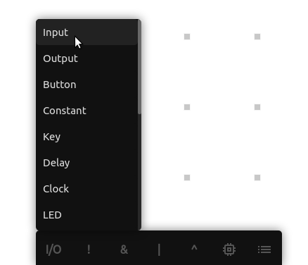
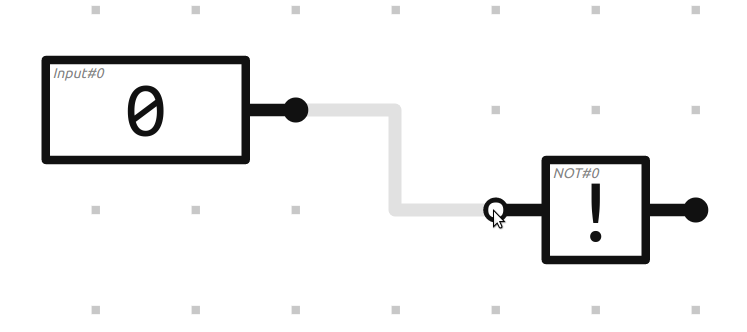
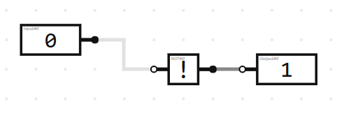
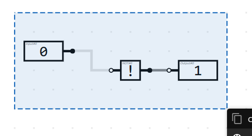
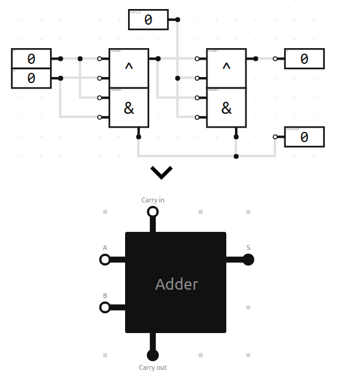
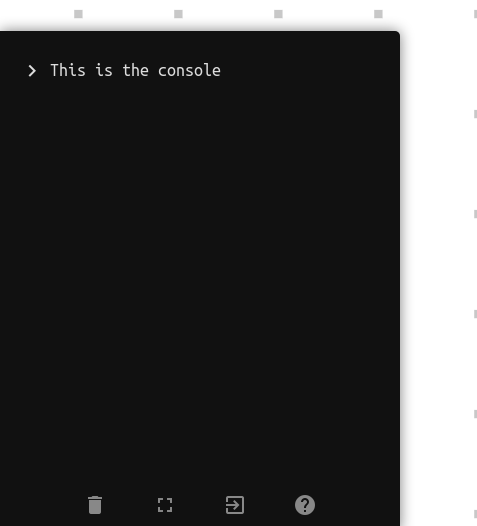
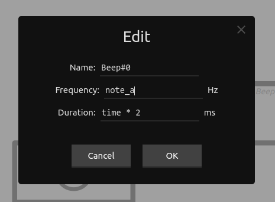

Welcome to your first BOOLR board. Here you can create circuits with logic gates.
zoom_in
Scroll to zoom in/out
swap_horiz
Move the mouse while holding the middle mouse button to move around.
If you don't have access to any middle mouse button, hold the Ctrl key and the left mouse button to move around.
Now it's time to introduce you to logic gates.
See the I/O button on the toolbar? Click it and select 'Input'.

Now you have selected the input gate. To place it on the board, simply click somewhere with the left mouse button.
Click the input gate to toggle its value.
Let's give our input gate a name. Right click it, select "Edit", and enter a name.
To move our input gate to another place on the board, grab it with Ctrl+click and drag it around.
Tip: To cancel dragging, press the right mouse button.
Let's connect our input gate with other logic gates.
Select the NOT gate (!) on the toolbar and give it a nice place on the board.
Click the output port (black) of our input gate and move the mouse while holding the left mouse button to the input port (white) of our NOT gate.

Now the input gate is connected with the NOT gate and the NOT gate will invert the value of the input gate.
Tip: You can right click on a gate on the toolbar to see the truth table of that gate.
But we can't see what value the NOT gate outputs. To see this, we are going to connect our NOT gate with an output gate.
Select the output gate from the input/output list (I/O) on the toolbar and place it on the board.
Now, connect the NOT gate with it the same way we connected the input gate with the NOT gate

Congratulations! You have built your first circuit!
Tip: to view the connections of a gate, right click it and click 'View connections'
Imagine this circuit is so special you want another one.
To do this, we need to select it. Hold shift and and drag the mouse while holding the left mouse button to select the circuit.
Make sure every logic gate of your circuit is inside the selection box

When you have selected your circuit, a menu pops up. Click 'Copy' or hit Ctrl+C.
To paste the circuit, right click somewhere on the board and click 'Paste' or hit Ctrl+V
Moving a selection around works the same way as moving gates, drag it around with Ctrl+click and release to drop it, right click to cancel
To remove a selection, click 'Remove' or hit Delete
If circuits are going to take up too much space, don't panic. The 'componentize function' will save you.
The 'componentize function' puts your circuit in a compact, nice little box. The input gates of your circuit are going to be its input ports, the output gates its output ports

To do this, select your circuit like the previous section and click 'Componentize'.
Double click your custom component to open it en view your circuit in its original state.
Press shift+T to open the console. You can use the command 'help' or '?' to see a list of available commands.
Use the arrow up and down key to navigate through earlier executed commands.

Press Ctrl+L to clear the console.
Use the tab key to autocomplete command names.
In commands that require a position as argument, you can use '~' for positions relative to the mouse position.
You can use the console to declare variables. For components with a specific numeric property like 'delay' on a clock, you can use that variable.

Usage: 'set example 200' and 'get example'. To use variables for components, enter for example '2 * example - 50' in the edit menu.
When you change the value of a variable by executing 'set example 500', the values of the components are automatically changed.
undo
Done something stupid? No problem. Simply press Ctrl+Z to undo your previous action. To redo, press Ctrl+Y or Ctrl+Shift+Z.
When you are going to build large structures, you might find yourself constantly scrolling around between two places.
You can set a waypoint to jump to a specific location on the board. To do this, open the context menu and click 'Set waypoint', or hit Shift+S.
my_location
To jump to that waypoint, open the context menu again and click 'Go to waypoint', or hit Shift+W.
If you have set multiple waypoints, a list is going to pop up in which you can select a waypoint.
Other useful tips:
You can change the position of a port by dragging it around with Ctrl+click
Hold the Shift key while connecting to draw the wire in a straight line.
Hold the Ctrl key while selecting/connecting to scroll.
If you don't have a mouse for some reason, use the arrow keys to scroll and Page up and Page down to zoom.
Press the Home key to go to x: 0, y: 0.
You can save custom components. Click 'Save component' on the context menu or press shift+R while pointing the mouse on the component you want to save.
Saved components can be found and used in de 'saved components' list on the toolbar.